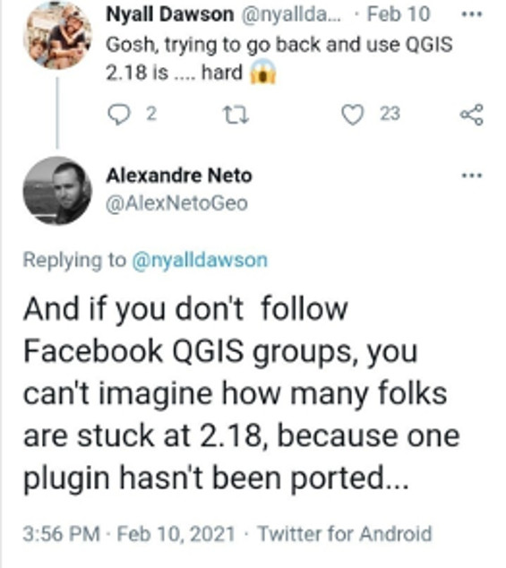
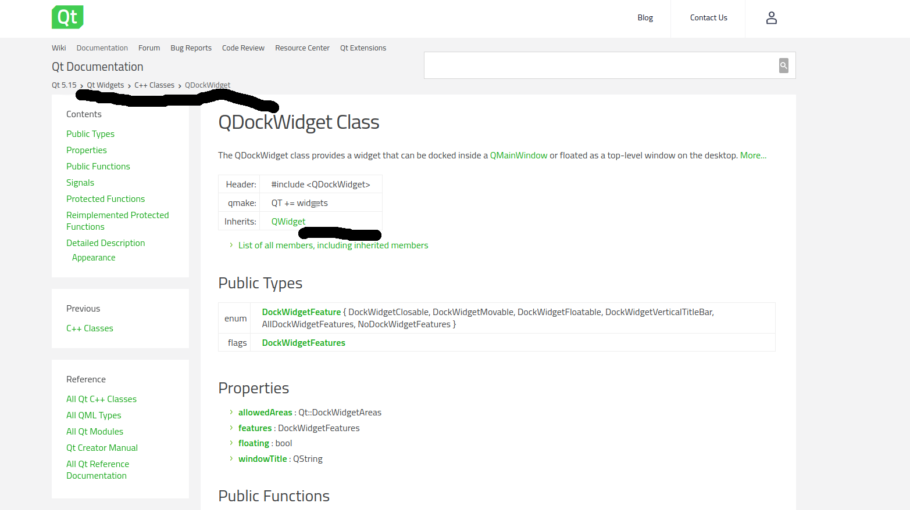

Introduction
Why would one be interested in porting an old QGIS2 plugin to QGIS3? Spin up a new plugin? Use the improved processing framework models for that given workflow?
on a lighter note, you'd be surprised!! 
Before beginning such a journey the need to do so must have risen either from a client's request, or the functionality provided by such a plugin is still not available natively in qgis3 core or core plugins. Maybe the plugin was used to access a private rest API service. Or the individual developer of such plugin haven't updated yet. All the reasons one might site, would trigger the urge to migrate the plugin by themselves. QGIS3 comes with a tone of fuctionalities provided by default, as opposed to having to install some plugins back in v2; please check first if what you're seeking to achieve available
From personal experience, I have encountered some organizations still using qgis2.18 because of a custom plugin that was developed for them to suit their daily workflow and is only compatible with v2 API. For instance the Surveying Calculation plugin that was developed by DigiKom and Zanzibar local authorities was developed for v2 to aid in survey and traverse/triangulation network calculation, adjustments, and reductions. It has seen less or rather in active development and is not supported by v3 API or the OpenAerialMap Plugin by HOTOSM to access and upload imagery from the open Aerial map platform, unfortunately the development was halted and is not maintained at the moment try this repo.
such plugins could have been part of your daily workflow pipelines as an individual or an org as a whole. So would you rather stick to legacy QGIS version or upgrade to feature-rich and improved user experience v3 offers. With plugins, one could play around with some of the semi-automated tools to port your plugin of choice if it is no longer/does not support QGIS3.
Since the release of QGIS v3, the community has tried to come with guides to help plugin developers to port their code to this version and a few best practices.
QGIS itself is written in C++, Qt framework and Python as the main scripting language. There's been myriads of changes within the QT Framework official deprecation of Qt4 to Qt5 and python2 End of life and support early 2020 to python3 which is the programming language used to develop plugins and custom scripts in QGIS.
Qt company recently announced the release of Qt6 as well as PySide6(Qt for python) good news to python developers as Qt officially now supports the language, beside develpement of tools like shiboken to bring your C++ code to python side. Well what does this mean to QGIS users?
Your guess is as good as mine. In the near future there'll be an upgrade to this new api probably in QGIS v4. This would emphasize more on why one might need to update to v3 api since the next migration guide would probably be specific to porting from QGIS3 to QGIS4.
Some of the significant changes in Qt4 to Qt5 are in the QtGui module which used to host the graphical widgets that was moved to the QtWidgets module. i.e in the v4 API.
from PyQt4.QtGui import (QDialog, QTabWidget, QWidget, QLayout)
to:
from PyQt5.QtWidgets import (QDialog, QTabWidget, QWidget, QLayout)
or Using version independent api provided by qgis modules
from qgis.PyQt.QtWidgets import (QDialog, QTabWidget, QWidget, QLayout)
Typical Migration workflow/steps
- Unit tests
- Fixing *(star) imports
- Versioning strategy/ legacy code back up.
- Install the code porting helpers
- Porting
Python2 to 3andPyQt4 to PyQt5 - Finding/Checking for API v2 usage in the plugin code base
Useful links
- Plugin Migration to QGIS3 wiki
- qgis2to3 tool also includes
python2to3api tools - qgis2apifinder
- qgis api compatibility Highlights api breaks and backward compatibility between the two versions.
- opengis.ch porting guideline which this guide is based on, Published by Marco Bernasocchi on 2018-04-13.
- First Aid Plugin repo Helps in debugging the plugin, points out the exact line an error has occured.
- plugin Reloader More like a "hot reload" tool once you make any changes to your plugin code without have to relaunch qgis instance.
QGIS3 Porting
Now that you are convinced that the quickest way is to continue supporting or using a plugin is to port to the recent supported long term or stable release of QGIS. You should have QGIS plugin dev tools already installed in your system. At the very least you should have
pyrcc5, pyuic5, git, IDE or text editor, qgis2to3 QtDesigner tool to edit you UI forms.
Note: Editing the UI forms might not be necessary when beginning, unless you want to modify the graphical interface of the plugin.
Spend sometime scheming through the code repository before trying to load it to the QGIS plugin folder. To understand not just the code, file structure but to familiarize. In QGIS2 the default plugin folder was in $HOME/.qgis2 which was changed to $HOME/user/.local/share/QGIS/QGIS3/profiles/default/python/plugins
for Linux based systems as for my scenario. It is important to note that the plugin folder location differs in other OS such as Windows and OSx.
Getting the plugin code to your local filesystem
If you are planning to contribute your changes to the main upstream plugin repo then it is advisable to keenly go through their contributing.md guides if there exists any. Follow the usual git workflow. Fork the repository before cloning to your system.
#Install qgis2to3 helper
$pip install qgis2to3 --user
#create your development directory
$mkdir plugin-dev && cd plugin-dev
#clone the forked plugin to your local file system
$git clone https://github.com/koyo-jakanees/oam-qgis-plugin
$cd oam-qgis-plugin
#fetch from the original repo incase changes might have been made in between
$git pull upstream
#Investigate the repo structure.
$tree .
$cd OpenAerialMap
#Create a symlink to point to qgis3 plugin folder
$sudo ln -sr ./ $HOME/.local/share/QGIS/QGIS3/profiles/default/python/plugins/OpenAerialMap
You should now be having a plugin with a symlink/shortcut point to the plugin folder. Let's get our hands dirty and break some things.
Unit Test
Provides a great opportunity to write and refactor your code to follow a TDD process. More often than not we're usually tempted to skip this part. If the plugin skeleton was prepared using the Plugin Builder tool then the plugin folder will have some boiler-plate tests that are auto-generated. But this shouldn't be a reason to add more Unittests for the codebase.
Some community-driven tools for the QT GUI test include; Qtest, pytest-qt 1, 2 respectively.
This comes in handy for future support and a clear outline for a future guideline for new contributors.
Source Code Versioning
Before you start editing the source files of the plugin, it's good practice to branch out the current main branch to another branch e.g 'Legacy' or 'API v2' off the main. For example:
$git checkout -b API_V2
Remember the final goal is to have an updated main branch that is compatible with QGIS api3. So go ahead and create a new branch(the one will be using to experiment and port) before merging back to main. Same as before but name the new branch with self-describing name e.g 'upgrade_2_to_v3'.
$git checkout -b upgrade_2_to_v3
After ensuring the legacy code stays in its branch and now we're working on the feature branch upgrade_2_to_v3, It's time to start fixing the imports in individual python files.
Fixing up * Imports
If you have gone through most plugin source files and example scripts found online, you find there are a lot * imports. PEP8 discourages this and can prove to be a pain when refactoring code. It's difficult to know which modules have been used in that namespace of which module does a given method used in the code is imported from.
Wildcard imports (from module import*) should be avoided, as they make it unclear which names are present in the namespace, confusing both readers and many automated tools. There is one defensible use case for a wildcard import, which is to republish an internal interface as part of a public API (for example, overwriting a pure Python implementation of an interface with the definitions from an optional accelerator module and exactly which definitions will be overwritten isn't known in advance).
Imports are always put at the top of the file, just after any module comments and docstrings, and before module globals and constants. Imports should be grouped in the following order:
- Standard library imports.
- Related third party imports.
- Local application/library specific imports.
You should put a blank line between each group of imports.
Linting tools like pylint and autopep8 also does not work well with star imports.
In general avoiding * imports improve the code readability and maintainability by other devs who might be new to that domain.
from PyQt4.QtGui import *
versus
from qgis.PyQt.QtWidgets import QDialog
This indicates which class or function in that module has been used.
I found this part somewhat challenging since I already knew that GUI items in Qt were moved from the QtGui to QtWidgets module, if you are just starting out, simply follow along with opengis guideline
If the Python interpreter complains about a given function call is not within the Module from which it was imported; this often happens with the PyQt5 API. Then a quick search of the class function or method in the documentation should provide an indication from which module it should be imported from. For example A quick search for QDockWidget in Qt5 docs. An understanding of Qt C++ docs is always a plus as you'll have an easy time navigating through the modules and class hierarchy. For instance:

The top part indicates Qt 5.15 > QtWidgets > C++ Classes > QDockWidget which in turn in PyQt5 implies that QDockWidget is found in the QtWidgets module, inherits QWidgets properties, and the corresponding import in your plugin should be from qgis.PyQt.QtWidgets import QDockWidget the page also contains info about the properties, types and functons.
You can use the same approach to understand the QGIS C++ API and class hierarchy.
One more edit before proceeding to the next section: In metadata.txt found in the root of your plugin folder change qgisMinimumVersion=3.0. This work through assumes that this port does not cater for backward compatibility within this branch and we'll only be support QGIS3.x versions.
Porting API v2 to API v3 python, PyQt4 to PyQT5
Assuming you already have the qgis2to3 installed in your system and is callable from the Command Line Interface(CLI)
# check the documentation of the tool and help message
$qgis2to3 --help
Usage: 2to3 [options] file|dir ...
Options:
-h, --help show this help message and exit
-d, --doctests_only Fix up doctests only
-f FIX, --fix=FIX Each FIX specifies a transformation; default: all
-j PROCESSES, --processes=PROCESSES
Run 2to3 concurrently
-x NOFIX, --nofix=NOFIX
Prevent a transformation from being run
-l, --list-fixes List available transformations
-p, --print-function Modify the grammar so that print() is a function
-v, --verbose More verbose logging
--no-diffs Don't show diffs of the refactoring
-w, --write Write back modified files
-n, --nobackups Don't write backups for modified files
-o OUTPUT_DIR, --output-dir=OUTPUT_DIR
Put output files in this directory instead of
overwriting the input files. Requires -n.
-W, --write-unchanged-files
Also write files even if no changes were required
(useful with --output-dir); implies -w.
--add-suffix=ADD_SUFFIX
Append this string to all output filenames. Requires
-n if non-empty. ex: --add-suffix='3' will generate
.py3 files.
The tool works both with directories and individual files. Invoking or calling the porting help from your terminal or OSGeo4W shell in your plugin folder.
$qgis2to3 -w /path/plugin/folder
/home/user/.local/bin/qgis2to3 -w /home/user/Documents/osGeoLive/salientrobot-dev/oam-qgis-plugin/OpenAerialMap
RefactoringTool: Skipping optional fixer: idioms
RefactoringTool: Skipping optional fixer: ws_comma
RefactoringTool: Refactored /home/user/Documents/osGeoLive/salientrobot-dev/oam-qgis-plugin/OpenAerialMap/make_package.py
RefactoringTool: Refactored /home/user/Documents/osGeoLive/salientrobot-dev/oam-qgis-plugin/OpenAerialMap/oam_main.py
RefactoringTool: Refactored /home/user/Documents/osGeoLive/salientrobot-dev/oam-qgis-plugin/OpenAerialMap/plugin_upload.py
RefactoringTool: Refactored /home/user/Documents/osGeoLive/salientrobot-dev/oam-qgis-plugin/OpenAerialMap/set_env.py
RefactoringTool: Refactored /home/user/Documents/osGeoLive/salientrobot-dev/oam-qgis-plugin/OpenAerialMap/backup_files/backup_backup_img_uploader_wizard.py
--- /home/user/Documents/osGeoLive/salientrobot-dev/oam-qgis-plugin/OpenAerialMap/make_package.py(original)
+++ /home/user/Documents/osGeoLive/salientrobot-dev/oam-qgis-plugin/OpenAerialMap/make_package.py(refactored)
@@ -1,3 +1,4 @@
+from __future__ import print_function
import os, sys
--- /home/user/Documents/osGeoLive/salientrobot-dev/oam-qgis-plugin/OpenAerialMap/oam_main.py(original)
+++ /home/user/Documents/osGeoLive/salientrobot-dev/oam-qgis-plugin/OpenAerialMap/oam_main.py(refactored)
@@ -22,33 +22,34 @@
***************************************************************************/
This script initializes the plugin, making it known to QGIS.
"""
+from __future__ import absolute_import
+from builtins import str
+from builtins import object
# Qt classes
# from PyQt4.QtCore import *
# from PyQt4.QtGui import *
# from qgis.core import *
-from PyQt4.QtCore import (QSettings,
- QTranslator,
- qVersion,
- QCoreApplication)
-from PyQt4.QtGui import (QAction, QIcon)
+from qgis.PyQt.QtCore import QSettings, QTranslator, qVersion, QCoreApplication
+from qgis.PyQt.QtWidgets import QAction
+from qgis.PyQt.QtGui import QIcon
# icon images
import resources_rc ......
The -w option tells the tool to write back the modified files. You'll notice that the tool also adds some python built-in modules e.g from __future__ import print_function
Don't be scared, this comes about when refactoring py2 to py3 code.
This function will also stdout the changes the tool made to each file in git style indicating the changed lines from which v2 API to which corresponding v3 API.
At this point, if the imports and porting worked out fine you should be able to load the plugin widgets and controls to the QgsInterface instance/session.
The next steps involve refactoring the API v2 used that the tool could not find a quick fix {Mainly QGIS API which makes the logic/control of the plugin}. Unfortunately, this is the boring part and requires a little bit of patience, don't be hard on yourself you have reached this far.
Finding API v2 Usages
Congratulations on making it this far. There are two useful resources and/or tools that will help you in porting the Qgs API v2 used within the plugin codebase
- QGIS2API finder is bundled with qgis2to3 tool and will also be available
- QGIS API break API documentation details backword incompatible changes.
The API of QGIS libraries is allowed to be changed just between major versions of QGIS. For example, there are various planned backward-incompatible changes between QGIS 1.8 and 2.0 because version 2.0 is a new major version. After a release of a major version of QGIS (e.g. 2.0), the developer team is committed to maintaining stable API for all subsequent minor releases (2.2, 2.4, ...). That roughly means we do not rename classes and methods, remove them nor change their semantics. Existing code should keep working when the user updates QGIS to another minor version (e.g. from 2.0 to 2.2), so all extensions of existing classes should be done in a manner that third party developers do not need to adjust their code to work properly with newer QGIS releases. Sometimes, however, we may need to break the API as a result of some code changes. These cases should be only exceptions and they should happen only after consideration and agreement of the development team. Backward incompatible changes with too big impact should be deferred to a major version release.
This page tries to maintain a list of incompatible changes that happened in previous releases.
Using the qgis2apifinder to find uses of api v2 in the code base and stdout potential required changes for the current version.
$qgis2apifinder --all /path/to/plugin/folder
./OpenAerialMap/__init__.py::53: Found name -> ['(class QgsSimpleMarkerSymbolLayer) and setName() have been removed. Use shape() and setShape() instead.']
./OpenAerialMap/__init__.py::56: Found instance -> ['(class QgsAuthManager) was removed in favor of QgsApplication::authManager() that returns an instance of the Auth Manager']
./OpenAerialMap/plugin_upload.py::100: Found name -> ['(class QgsSimpleMarkerSymbolLayer) and setName() have been removed. Use shape() and setShape() instead.']
./OpenAerialMap/plugin_upload.py::115: Found name -> ['(class QgsSimpleMarkerSymbolLayer) and setName() have been removed. Use shape() and setShape() instead.']
./OpenAerialMap/set_env.py::26: Found map -> ['(class QgsMapCanvas) has been removed because QgsMapCanvasMap is not available in API anymore.']
./OpenAerialMap/set_env.py::97: Found map -> ['(class QgsMapCanvas) has been removed because QgsMapCanvasMap is not available in API anymore.']
./OpenAerialMap/oam_main.py::57: Found instance -> ['(class QgsAuthManager) was removed in favor of QgsApplication::authManager() that returns an instance of the Auth Manager']
./OpenAerialMap/oam_main.py::85: Found actions -> ['(class QgsDataItem) now requires a new QWidget parent argument. Subclasses should ensure that returned items have been']
./OpenAerialMap/oam_main.py::127: Found normal -> ['(class QgsVector) was removed. Use normalized() instead.']
./OpenAerialMap/oam_main.py::159: Found actions -> ['(class QgsDataItem) now requires a new QWidget parent argument. Subclasses should ensure that returned items have been']
As you can see from the terminal output the tool schemes through the whole plugin to find v2 API uses and gives out suggestions to the possible changes in v3. This is critical when hunting for these differences and minimizes time spent going through a whole file but jumping straight to the affected lines. Using this tool alongside the QGIS API break wiki to refactor your code further since the output of the tool is only available in the terminal it's a good option to stream it to a file like api2find.log.md for future reference so that you don't have to run the command every time you want to refactor or if in a new terminal session.
$qgis2apifinder --all /plugin/folder > ./api2find.log.md
If you are planning to maintain the plugin for future migrations keep checking the Plugin Migration to QGIS3 wiki for updated information and best practices when delving into this path.
Extras
- CI/CD QGIS plugin CI
- Submitting a pull request